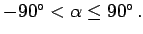
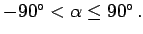

Schnittwinkel, Kurswinkel und Azimut
- Schnittwinkel und Kurswinkel:
- Unter dem Schnittwinkel zweier sphärischer Kurven versteht man den Winkel, den ihre Tangenten im Kurvenschnittpunkt P1 bilden. Ist eine der beiden Kurven ein Meridian, dann wird der Schnittwinkel der nördlich von P1 gelegenen Kurvenabschnitte in der Navigation Kurswinkel
 genannt. Zur Beschreibung der östlichen und westlichen Neigung der Kurve ordnet man dem Kurswinkel gemäß Teil a) und b) der Abbildung ein Vorzeichen zu und beschränkt ihn auf das Intervall 
genannt. Zur Beschreibung der östlichen und westlichen Neigung der Kurve ordnet man dem Kurswinkel gemäß Teil a) und b) der Abbildung ein Vorzeichen zu und beschränkt ihn auf das Intervall 
- Kurswinkel und Azimut:
- Der Kurswinkel ist ein orientierter, d.h. mit einem Vorzeichen versehener Winkel. Er ist unabhängig von der Orientierung der Kurve - das ist ihr Durchlaufsinn.
Die Orientierung der Kurve von P1 nach P2 gemäß Teil c) der Abbildung wird durch das Azimut  beschrieben: Es ist der Schnittwinkel zwischen dem durch den Kurvenschnittpunkt P1 verlaufenden und nach Norden weisenden Meridian und dem von P1 nach P2 verlaufenden Kurvenabschnitt. Man beschränkt das Azimut auf das Intervall
beschrieben: Es ist der Schnittwinkel zwischen dem durch den Kurvenschnittpunkt P1 verlaufenden und nach Norden weisenden Meridian und dem von P1 nach P2 verlaufenden Kurvenabschnitt. Man beschränkt das Azimut auf das Intervall
- Hinweis:
- In der Navigation werden die Ortskoordinaten meist in sexagesimalen Altgraden, sphärische Abstände sowie Kurswinkel und Azimute dagegen in dezimalen Altgraden angegeben.